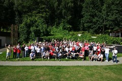
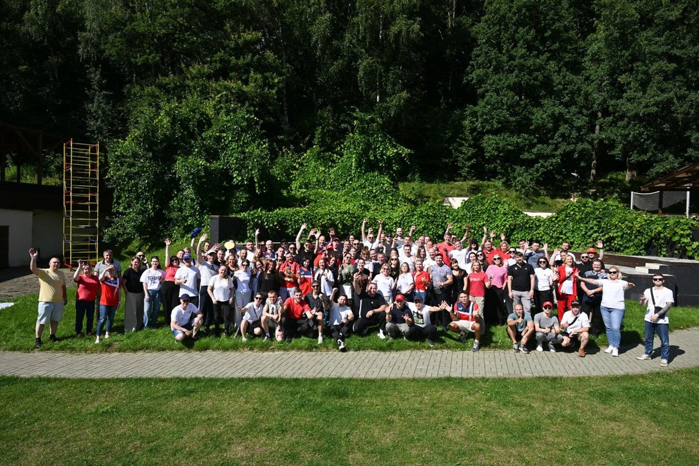

ЧЕРНОВИК. Условно: покупаем только если площадка письменно подтвердит открытую бессрочную ссылку. Рекламная новость на delo-press.ru, 5 000 ₽, 1 ссылка. Word-файл: katalist-issledovanie-korporativov.docx. Изображения в этой же папке: anons-240x160.jpg, foto-1.jpg.
Ивент-агентство «Каталист» разобрало 698 заявок компаний за 2026 год: сколько закладывают на корпоратив и тимбилдинг, за сколько бронируют и какие группы заказывают.

Ивент-агентство «Каталист» опубликовало исследование спроса на корпоративы и тимбилдинги по 698 заявкам компаний с 1 января по 19 ноября 2026 года. Источник данных: CRM агентства. Это данные одного агентства: они показывают структуру спроса, а не объём рынка.

Типичный бюджет заявки составил около 560 000 ₽, или 5 700 ₽ на участника (медиана по 452 заявкам). Половина заявок лежит между 430 000 ₽ и 900 000 ₽. Типичная группа: 100 человек.
Чем больше группа, тем дешевле участник. До 30 человек это около 13 300 ₽ на человека, 201-500 человек около 3 900 ₽. Участник в маленькой группе обходится в 3,4 раза дороже. Для группы 51-100 человек типичный бюджет 500 000 ₽, около 6 300 ₽ на участника.
Между заявкой и событием проходит 7,1 недели (медиана по 402 заявкам). Половина компаний приходит за 4,2-10,5 недели. За 8 недель и раньше приходят 40% заявок, меньше чем за 4 недели 22%. Июль, август и декабрь дают 67% заявок второго полугодия.
На декабрь 2026 года пришло 68 заявок, типичный срок 7,4 недели. 63% декабрьских заявок пришли до 1 ноября. Цифры предварительные: выгрузка сделана 19 ноября.
Бюджет на корпоратив удобнее считать на человека: на малую группу в расчёте на участника уходит больше, чем на большую. Если событие летом или в декабре, заявку лучше заводить за 8 недель и раньше: так делают 40% компаний. Суммы в исследовании взяты из заявок, а не из итоговой оплаты: часть заявок не дошла до договора.
Все цифры округлены, названий компаний и сумм отдельных сделок в публикации нет. Таблицы доступны в формате CSV по лицензии CC BY 4.0.
Ивент-агентство «Каталист» работает с 2010 года: больше 5 000 проектов, 16 наград. Тимбилдинги и корпоративы для групп от 50 до 5 000 человек.